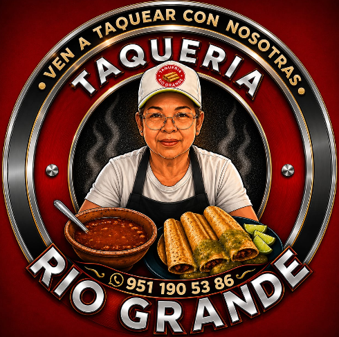
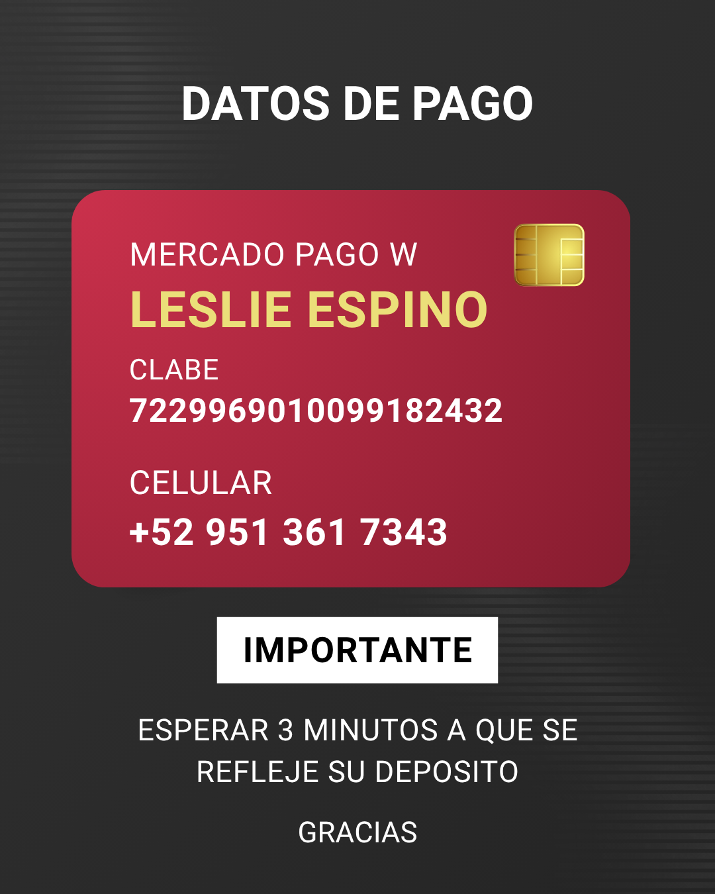

Disfruta del auténtico sabor de nuestros tacos, preparados con ingredientes frescos, excelente atención y el sazón que nos distingue.
En Taquería Río Grande trabajamos cada día para ofrecerte tacos preparados con ingredientes de calidad, excelente atención y un ambiente familiar. Ya sea para cenar con tu familia, venir con tus amigos o pedir para llevar, será un gusto atenderte.

Puedes realizar tu pago mediante transferencia bancaria o Mercado Pago.
Durante fechas especiales como el Día de las Madres, Día del Padre, aniversarios y otras celebraciones, realizamos promociones, descuentos y sorteos exclusivos para nuestros seguidores.
Seguir en FacebookLibramiento Nuevo a Zaachila S/N, San Raymundo Jalpan, entre casi frente al Restaurante Los Adobes, 71248 Oaxaca de Juárez, Oaxaca.
Para brindar un servicio más rápido y organizado, no realizamos cuentas separadas. Agradecemos mucho tu comprensión.